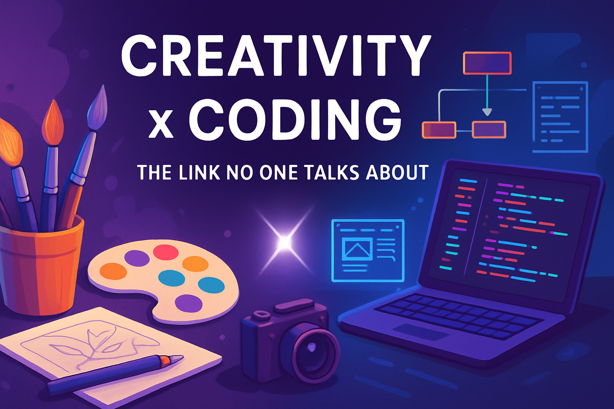

The Link Between Creativity and Coding No One Talks About

When most people think of coding, they imagine cold logic, syntax rules, and long lines of commands. But here’s a truth that doesn’t get enough attention — coding is deeply creative. Whether you're building a sleek website interface or designing an interactive application, the process demands imagination, innovation, and problem-solving — the core elements of creativity.
In this post, we’ll explore the hidden connection between creativity and coding — especially for frontend developers and creatives who are just starting their journey. Let’s break the stereotype that coding is only for the “techy” ones and show why creative thinkers might just make the best developers.
1. Coding is Design in Motion
Every website or app you admire started as an idea. The layout, colors, typography, transitions — none of these happen by accident. They’re results of deliberate creative decisions. Frontend developers use HTML, CSS, and JavaScript not just to make things work, but to make them look and feel right. It’s design — powered by code.
Just like a painter chooses their brush strokes, a frontend dev chooses animations, spacing, or typography to guide user experience.
2. Problem Solving = Creative Thinking
At the heart of both creativity and coding is problem-solving. Whether you're figuring out how to structure a layout for mobile or fixing a bug that breaks your site, you’re exercising creative muscles.
Coding challenges you to think outside the box, try new approaches, and iterate until you find what works. That’s exactly what creatives do — in art, music, writing, or photography.
3. Creativity Makes You Stand Out as a Developer
In a world filled with developers, your creative edge can become your superpower. When you learn to code with a designer’s mindset, your projects have life, flair, and uniqueness.
Anyone can copy a layout from a tutorial — but only a creative coder can add that extra detail, transition, or story that makes a site unforgettable. Creativity is what gives your code personality.
4. Coding Enhances Creative Confidence
Ironically, learning to code often helps non-techy creatives gain confidence. Once you learn to turn your visual or artistic ideas into functional projects, you realize you’re not limited to just thinking — you can build.
For example, if you're a photographer or filmmaker, knowing how to build your own portfolio site means full creative control. You’re no longer waiting for someone to bring your ideas to life.
5. The Vibe of Coding: Flow State for Creatives
There’s a certain vibe when you’re deep in code — like an artist lost in their painting. Coders call it the flow state — when time disappears, distractions fade, and your mind is fully immersed in building.
If you’ve ever felt this when editing a photo or crafting a story, you’ll feel right at home in code too. Coding isn’t just technical; it’s a rhythm.
Final Thoughts: Code is a Canvas
If you’re a beginner frontend developer or a creative soul thinking about coding, here’s what you need to know: your creativity is not separate from your code — it fuels it.
Don’t think of coding as boring or robotic. Think of it as another medium — like paint, a camera, or a blank page — where you can bring your ideas to life.
So the next time someone says coding is just about logic, smile and show them the beautiful, functional, interactive art you’ve created with a few lines of code.
🔁 Was this helpful? Share with a fellow creative who’s scared of code.
💻 Ready to blend art and tech? Start with a small project and let your creativity lead the way.